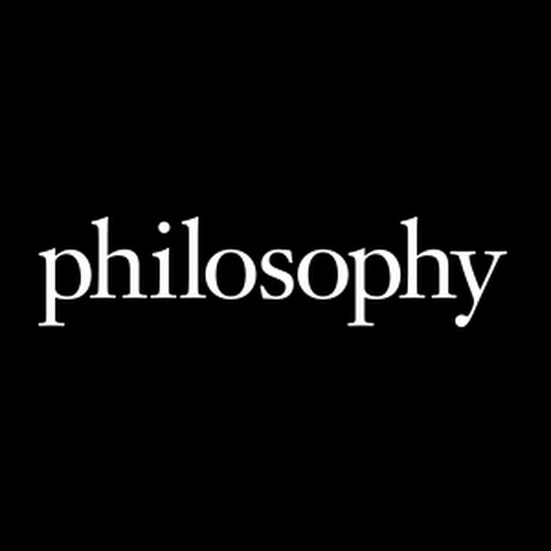

here taken to mean either (1) philosophy in the German language or (2) philosophy by Germans, has been extremely diverse, and central to both the analytic and continental traditions in philosophy for centuries, from Gottfried Wilhelm Leibniz through Immanuel Kant, Georg Wilhelm Friedrich Hegel, Arthur Schopenhauer, Karl Marx, Friedrich Nietzsche, Martin Heidegger and Ludwig Wittgenstein to contemporary philosophers. Søren Kierkegaard (a Danish philosopher) is frequently included in surveys of German (or Germanic) philosophy due to his extensive engagement with German thinkers
